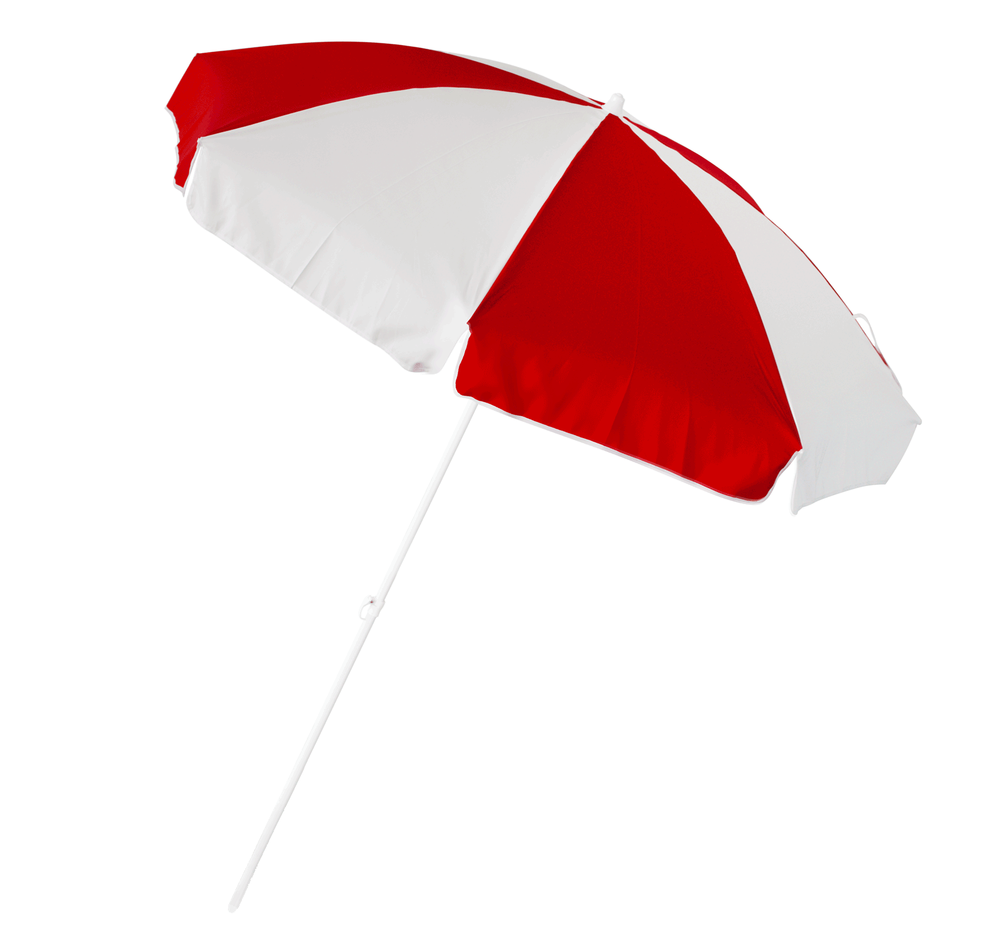

Umbrella - подберём вам качественный зонт!

Каталог
Зонт "синий"
Зонтик является очень полезной и незаменимой вещью как в хмурую и дождливую погоду, так и в
солнечный летний день.
Этот аксессуар пользуется большой популярностью среди мужчин, женщин и детей.
Синий зонтик, бесспорно, является трендом этого сезона.
Пляжный зонт
С приходом лета пора задуматься над приобретением аксессуаров, которые будут защищать от солнца.
Это позволит не допустить негативных последствий, которые ожидают от его лучей.
Пляжные зонты – лучший выбор.
Зонт "чёрный"
Черный зонт полезен как в солнечные дни, так и в дождь.
Вы можете заблокировать 90% солнечных лучей от попадания на кожу, используя черный зонт
Там, где белый отражает солнечные лучи, черный поглощает солнечный свет.
Таким образом, вы не подвергаетесь воздействию сильных ультрафиолетовых лучей.